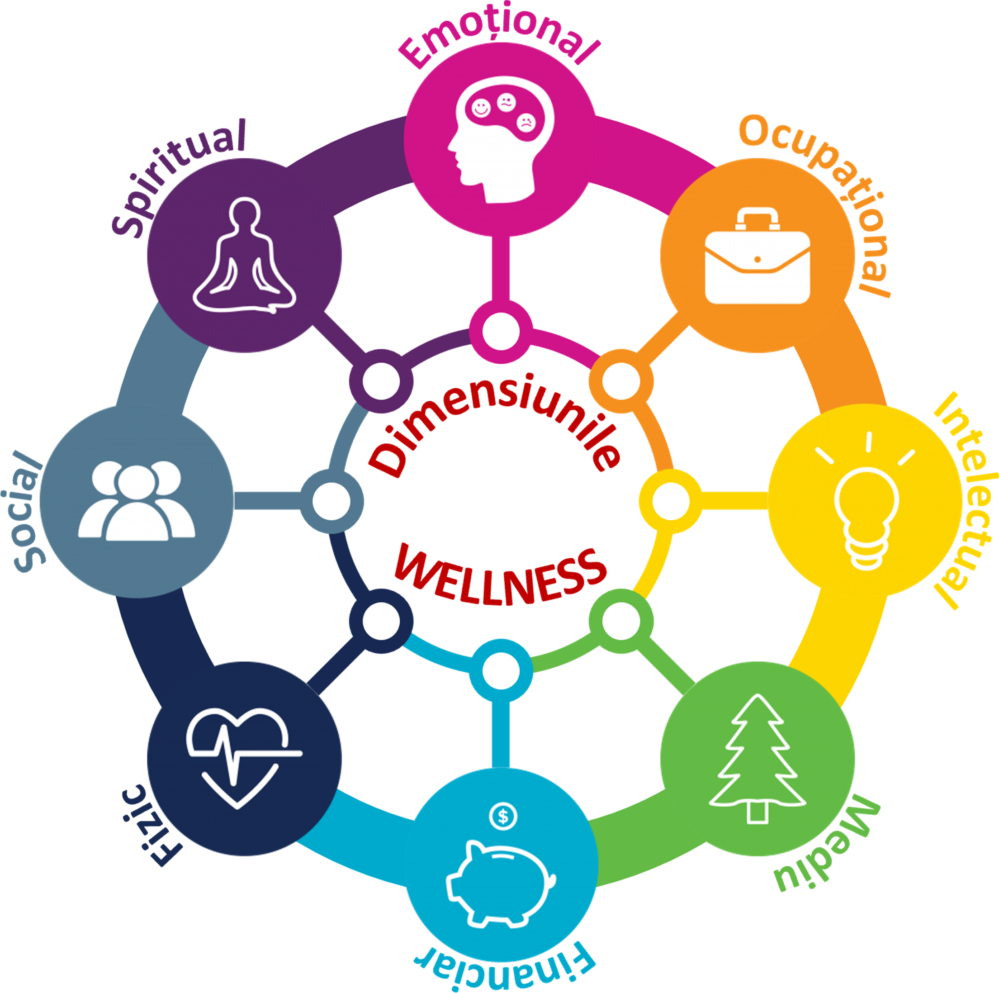

Wellness: o abordare holistică a sănătății
Wellness-ul este o stare activă de echilibru și prosperitate, integrând diverse dimensiuni ale bunăstării umane. Descoperă cum o abordare proactivă și conștientă a fiecărui aspect al vieții tale poate duce la o sănătate optimă și o împlinire profundă.
Ce este wellness-ul? o definiție extinsă și o perspectivă proactivă
Wellness-ul este o abordare holistică și proactivă a sănătății, care integrează diverse dimensiuni ale bunăstării umane. Nu este doar absența bolii (care este o definiție limitată a sănătății), ci o stare activă de echilibru, vitalitate și prosperitate în toate aspectele vieții. Este o călătorie conștientă de auto-dezvoltare, îmbunătățire continuă și atingere a potențialului maxim. Conceptul de wellness recunoaște interconexiunea dintre minte, corp și spirit, și subliniază responsabilitatea individuală în menținerea sănătății.
Organizația Mondială a Sănătății (OMS) definește sănătatea ca o stare de bunăstare fizică, mentală și socială completă, și nu doar absența bolii sau a infirmității. Wellness-ul extinde această definiție, incluzând aspecte precum scopul, mediul, finanțele și dezvoltarea intelectuală, promovând o viziune integrală asupra vieții. Este o stare dinamică, nu statică, care necesită eforturi continue și adaptare la schimbările din viață.
Dimensiunile wellness-ului: o hartă completă a bunăstării tale
Sănătatea ta este un sistem interconectat, în care fiecare dimensiune influențează și este influențată de celelalte. Cele opt dimensiuni ale wellness-ului lucrează împreună pentru a-ți asigura o stare optimă de bine. Neglijarea unei singure dimensiuni poate afecta echilibrul întregului sistem, similar cu o roată care nu este perfect rotundă.
Wellness emoțional
Abilitatea de a înțelege, de a gestiona și de a exprima emoțiile în mod sănătos, de a face față stresului, de a construi relații pozitive și de a-ți menține o perspectivă optimistă. Implică inteligența emoțională și reziliența psihologică.
Include:
- Conștientizare emoțională: Recunoașterea și înțelegerea propriilor emoții și a celorlalți.
- Gestionarea stresului: Tehnici de mindfulness, meditație, respirație profundă, jurnalism terapeutic. (Referință: Bongiorno, P. B. (2015). Holistic Solutions for Anxiety & Depression in Therapy. W. W. Norton & Company.)
- Relații pozitive: Cultivarea conexiunilor sociale de suport și empatie.
- Reziliență: Capacitatea de a te adapta și de a depăși dificultățile și adversitățile.
Wellness profesional/ocupațional
Găsirea satisfacției și a împlinirii în munca ta, alinierea valorilor personale cu activitatea profesională și menținerea unui echilibru sănătos între viața profesională și cea personală. Contribuția la societate prin muncă semnificativă.
Include:
- Găsirea unei munci pasionante: Alinierea cu valorile, aptitudinile și interesele personale.
- Gestionarea stresului la locul de muncă: Tehnici de time management, stabilirea priorităților, delegare, pauze regulate.
- Echilibru viață-muncă: Delimitarea clară a timpului personal de cel profesional pentru a preveni burnout-ul.
- Dezvoltare continuă: Învățarea de noi abilități, căutarea de provocări intelectuale și oportunități de creștere.
Wellness intelectual
Angajarea activă a minții prin învățare continuă, explorare, creativitate și rezolvare de probleme. Este despre deschiderea către noi idei, perspective și experiențe, menținând creierul ager și curios.
Include:
- Învățare continuă: Citit, participarea la cursuri, documentare, explorarea unor noi domenii de interes.
- Curiozitate și deschidere la idei noi: Flexibilitate cognitivă și adaptabilitate.
- Stimulare cognitivă: Jocuri de logică, puzzle-uri, învățarea unei limbi noi, instrumente muzicale. (Referință: Ramachandran, V. S. (2011). Ce Ne Spune Creierul. Humanitas.)
- Creativitate: Exprimarea prin artă, muzică, scris, rezolvare inovatoare de probleme.
Wellness de mediu
Relația ta cu mediul înconjurător și impactul acestuia asupra bunăstării tale. Aceasta include atât mediul natural (aer, apă, sol), cât și mediul construit (locuință, loc de muncă, comunitate) și responsabilitatea personală față de planetă.
Include:
- Expunere la aer și apă curată: Conștientizarea calității mediului în care trăiești.
- Locuințe și locuri de muncă sigure și sănătoase: Fără toxine, mucegai, poluare sonoră, iluminat adecvat.
- Responsabilitate ecologică: Reciclare, reducerea amprentei de carbon, consum sustenabil.
- Conexiunea cu natura: Timp petrecut în aer liber, împământare (grounding), beneficiile biofiliei. (Referință: New Lease Of Life. PDFDrive.)
Wellness financiar
Gestionarea eficientă a resurselor financiare pentru a reduce stresul, a asigura stabilitatea și a permite atingerea obiectivelor personale pe termen lung. Este despre a avea control asupra finanțelor tale, nu invers.
Include:
- Bugetare și economii: Planificare financiară conștientă.
- Planificare pentru viitor: Investiții, asigurări, pensie.
- Reducerea stresului financiar: Conștientizarea și abordarea cauzelor datoriilor sau a insecurității financiare.
- Educație financiară: Înțelegerea principiilor economice de bază și a opțiunilor de investiții.
Wellness fizic
Sănătatea și funcționarea optimă a corpului tău, susținută prin alegeri conștiente și obiceiuri sănătoase. Este fundamentul pe care se construiesc toate celelalte dimensiuni ale wellness-ului.
Include:
- Nutriție echilibrată și hidratare: Dietă densă nutrițional, apă pură, evitarea alimentelor procesate. (Referință: Abecedar de Nutriție. Nicolae Hâncu.)
- Activitate fizică regulată: Exerciții aerobice, de forță, flexibilitate, adaptate nevoilor individuale. (Referință: 2016 - Ghid Preventie vol.2.pdf.)
- Somn de calitate și igienă: 7-8 ore de somn reparator, respectarea ritmurilor circadiene. (Referință: Repausul și Somnul. Pilonul Esențial al Sănătății.)
- Evitarea substanțelor nocive: Fumat, alcool în exces, droguri, expunere la toxine.
- Controale medicale regulate: Prevenție, depistare precoce și managementul afecțiunilor.
Wellness social
Cultivarea relațiilor sănătoase, a conexiunilor semnificative și a sentimentului de apartenență la o comunitate. Oamenii sunt ființe sociale, iar izolarea este dăunătoare pentru sănătatea mentală și fizică.
Include:
- Conexiuni sănătoase cu familia și prietenii: Suport emoțional, comunicare deschisă.
- Contribuția la comunitate: Voluntariat, implicare civică, sentimentul de a face parte din ceva mai mare.
- Empatie și respect: Abilități sociale esențiale pentru interacțiuni pozitive.
- Comunicare eficientă: Exprimarea nevoilor, ascultarea activă, rezolvarea conflictelor.
Wellness spiritual
Găsirea sensului și scopului în viață, dezvoltarea unui set de valori și etici personale, și o conexiune cu ceva mai mare decât sine. Nu este neapărat legat de religie, ci de o dimensiune interioară profundă a existenței.
Include:
- Meditație și reflecție: Practici de introspecție și conștientizare.
- Practicarea recunoștinței: Cultivarea unei atitudini pozitive și apreciative.
- Conexiune cu ceva mai mare decât sine: Natură, univers, divinitate, umanitate. (Referință: Metode Divine de Vindecare - Semida David.pdf.)
- Serviciu altruist: Contribuția la binele comun, acte de bunătate.
"Bateria wellness": menține-o încărcată! o metaforă pentru echilibrul energetic
Imaginează-ți starea ta generală de bine ca pe o baterie de telefon. Fiecare dimensiune a wellness-ului contribuie la nivelul de încărcare, iar activitățile cotidiene pot fie să o încarce, fie să o descarce. Menținerea unui echilibru sănătos necesită conștientizare și acțiuni proactive.
Încărcarea bateriei: activități de reîmprospătare
- Un antrenament bun (fizic): Eliberează endorfine, îmbunătățește circulația.
- O discuție sinceră și profundă cu un prieten (social): Conexiune emoțională, suport.
- O carte bună sau învățarea unei noi abilități (intelectual): Stimulare cognitivă, satisfacție.
- O masă nutritivă și echilibrată (fizic): Furnizează energie și nutrienți esențiali.
- Un moment de meditație sau reflecție (emoțional/spiritual): Calmează mintea, reduce stresul, reconectează cu sinele.
- Finalizarea cu succes a unui proiect la muncă (profesional): Sentiment de realizare, satisfacție.
- Timp petrecut în natură (mediu): Reîncărcare energetică, reducere a stresului.
Descărcarea bateriei: factori de epuizare
- Stres cronic și prelungit (emoțional, profesional): Epuizează resursele adrenale și mentale. (Referință: Maté, G. (2021). Când Corpul Spune Nu. Editura Herald.)
- Alegeri nutriționale nesănătoase (fizic): Alimente procesate, zahăr în exces, lipsa nutrienților esențiali.
- Lipsa somnului de calitate (fizic): Împiedică regenerarea și repararea corpului.
- Conflicte nerezolvate sau izolare socială (social): Drenează energia emoțională.
- Muncă excesivă și lipsa pauzelor (profesional): Duce la burnout.
- Probleme financiare nerezolvate (financiar): Generează anxietate și stres constant.
- Neglijarea unei dimensiuni trage în jos și celelalte: Dezechilibrul într-o zonă se propagă în întregul sistem.
Secretul este să o menții într-un echilibru sănătos, prevenind descărcările profunde și asigurând reîncărcări constante și conștiente în toate dimensiunile vieții tale.
Concluzie: wellness-ul tău, responsabilitatea ta! o abordare holistică pentru o viață împlinită
Principiul "bateriei wellness" te ajută să înțelegi că sănătatea este un sistem dinamic și interconectat, care necesită atenție și îngrijire constantă pe toate planurile. Adoptă o abordare proactivă, investește în fiecare dimensiune a bunăstării tale și gestionează-ți propria stare de bine pe termen lung. Prin integrarea conștientă a nutriției, mișcării, repausului, echilibrului emoțional, relațiilor sănătoase, dezvoltării intelectuale, stabilității financiare și conexiunii spirituale, vei construi o viață împlinită și o sănătate robustă în programul ReDefine!